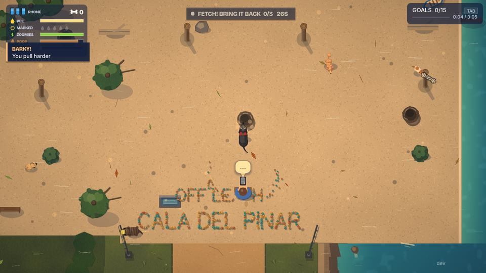

Camí de Ronda
The cliff path above the coves
The Mediterranean coastal cliff path winding past pine coves and wooden cliff railings high above fishing boats bobbing below. Crosswinds shove a careless pair toward the edge on the way to Cala del Pinar.
- Off-leash stop
- CALA DEL PINAR (Fenced dog yard)
- Beat the clock
- Under 3:05
Screenshots



Goals (15)
- Mark 5 spots
- Have 4 good long sniffs
- Get the phone home without a scratch
- Get yourself home without a bump
- Get your business bagged
- Bring the ball back 3 times
- Scarf down 2 dropped snacks
- Keep to the landward side through a gust
- Sniff along the rail over 2 coves
- Bark at 2 fishing boats below
- Land an x3 trick combo
- Nab the anchovy bocadillo off the wall
- Spell LEASH
- Find the hidden pernil
- Beat the clock (under 3:05)